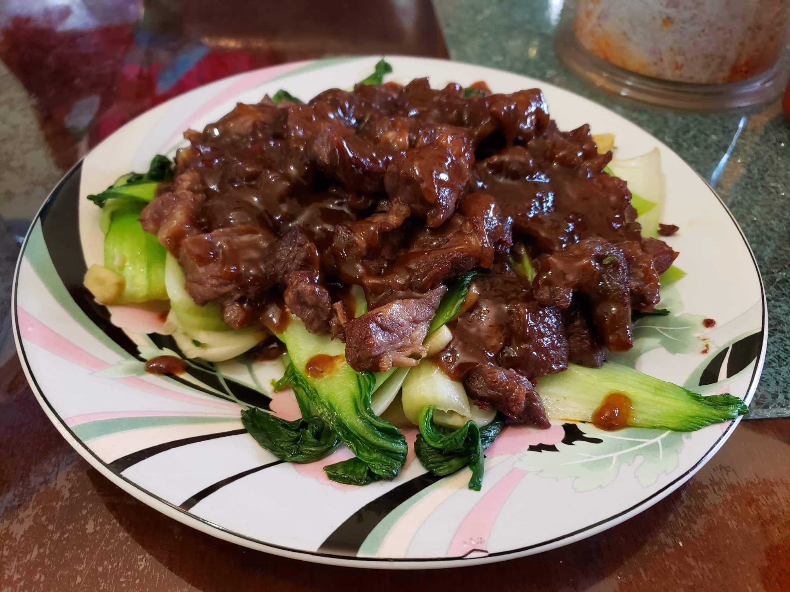

Chow Steak Kow (Steak Stir-fry)

Ingredients:
Marinade:
- 1 lb Ribeye steak or Sirloin steak, cut into 1 inch cubes
- 1 tbsp Vegetable oil
- 1 tsp Cornstarch
- 1/4 tsp Salt
- 1/8 tsp Baking soda
Sauce:
- 5 tbsp Water
- 1 tsp Kethcup
- Optional: 1 tsp Worcestershire sauce
- 2 tsp Soy sauce
- 2 tsp Oyster sauce
- 1/8 tsp Ground white pepper
- 1/8 tsp Sesame oil
Other Ingredients:
- 12 oz Bok Choy, base removed
- 1 1/2 tbsp Vegetable oil, divided
- 3-4 slices Ginger, smashed
- 3 cloves Garlic, chopped
- 1/2 tsp Salt
- 1/8 tsp Sugar
- Optional: 1/8 tsp MSG
- 1 tbsp Cornstarch, mixed with 1 tbsp Water
Instructions:
- Combine marinade ingredients and let marinate overnight.
- Combine the sauce ingredients into a bowl.
- Heat the wok over high heat. Spread 1 tbsp vegetable oil around the perimeter of the wok, and immediately add your smashed ginger slices. After 5 to 10 seconds, add the chopped garlic and bok choy. Quickly stir-fry the bok choy until it begins to wilt (about 1 minute).
- After the bok choy is cooked and wilted, add the salt, sugar and optionally MSG. Mix thoroughly, transfer to a serving plate, and set aside.
- Carefully rinse your wok with warm water, drain, and wipe off any excess moisture. Place the wok back over the burner and set to high heat. Spread 1/2 tbsp vegetable oil around the perimeter of the wok.
- Once the wok begins to smoke, add the steak in a single layer, fat-side down for any pieces with visible fat. Sear for 30 seconds or until brown. Use a wok spatula to toss everything together to ensure even cooking and browning, but make sure not to stir too much in order to get a good sear.
- Once done to your liking, turn off the heat and scoop the steak over the bok choy to rest. (If any liquid has pooled on the bok choy plate, pour the excess off before adding the beef.) Leave 1-2 tbsp of the residual oil from the beef in the wok and discard of the rest.
- Turn the wok back up to medium-high heat. Pour the prepared steak sauce into the wok, using it to deglaze the wok.
- When the sauce is simmering, stir up the cornstarch slurry and drizzle it into the sauce, letting it thicken until it coats a spoon. Simmer for an additional 20 seconds to ensure the cornstarch is cooked. Turn the heat off, pour the sauce over your steak, and serve immediately with steamed rice.